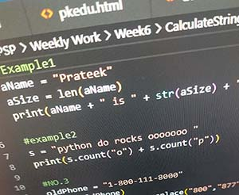
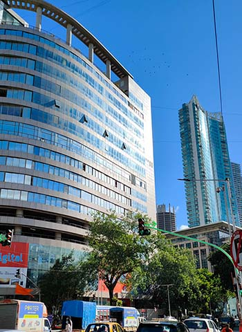

EXPERIENCE

The knowledge I gained during my studying time along with my hardwork helps me to get many jobs including my Dream job - 'Infosys'. Before and after that I have worked in many other MNCs as well and have gained a lot of experience.
My other experience includes -
- Software Development
- Project: Intelligent Personal Assistant
- Description: Developed a virtual assistant using advanced language processing and machine learning algorithms.I also contributed with cross fumctional teams to gather and analyze project reqiurements.
- Conducted thorough testing and debugging to identify and resolve software defets , ensuring the deleivery of high-quality of igh-quality products to clients.
- Graphic Design
- - Project: Branding Overhaul for a Tech Startup
- - Description: Revamped the visual identity of a technology startup, including a new logo, website design, and marketing collateral. Also contributed with many clients to understand design requirements , brand guidelines, and marketing objectives, ensuring alignment.
- Environmental Science
- Project: Branding Overhaul for a Tech Startup
- Description: Revamped the visual identity of a technology startup, including a new logo, website design, and marketing collateral
One of the company in which I worked is Boston Consulting Group. This tech company is situated in Mumbai , India.
Boston Consulting Group, Inc. (BCG) is an American global management consulting firm founded in 1963 and headquartered in Boston, Massachusetts.
It is one of the Big Three (or MBB, the world's three largest management consulting firms by revenue) along with McKinsey & Company and Bain & Company.
The firm was founded in 1963 as part of The Boston Safe Deposit and Trust Company. Bruce Henderson had been recruited from Arthur D. Little to establish the consulting arm operating as a subsidiary under the name Management and Consulting Division of the Boston Safe Deposit and Trust Company
Since 2021, the consultancy has been led by the German executive Christoph Schweizer.

- Along with this, I also worked as Volunteer. My volunteer experience includes-
-
- Environmental Conservation:
- Organization: Green Horizon Initiative
- Role: Environmental Volunteer
- Description: Contributed to tree planting initiatives, organized community clean-up events, and conducted awareness campaigns on sustainable living practices.
- Healthcare:
- Organization: Health First Outreach
- Role: Community Health Volunteer
- Description: Assisted in organizing health clinics, conducted health awareness workshops, and participated in outreach programs to promote preventive healthcare practices in underserved communities.
- Animal Welfare:
- Organization: Paws and Claws Rescue
- Role: Animal Care Volunteer
- Description: Provided care for rescued animals, including feeding, grooming, and assisting with adoption events. Participated in fundraising activities to support the organization's mission.